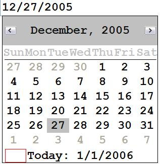
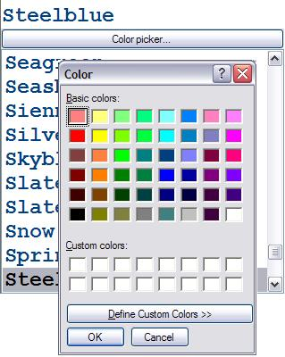

Custom Editors#
If an XML schema is provided for validation, it can also define custom editors on specific
<xsd:simpleType> tags.
A default custom editor is provided for the simpleTypes xsd:date, xsd:dateTime, and xsd:time. Any element or
attribute of this type will be edited using the WinForms DateTimePicker, configured for the current system locale, for
example:

Custom Builders#
Custom Builders provide a button that appears at the top of the intellisense list. When the user clicks on that button, it invokes the builder to edit the value, typically triggering a modal dialog.
A custom builder for editing file names is provided and is automatically associated with the xsd:anyURI data type. You
can associate this builder manually using the vs:builder="XmlNotepad.UriBuilder"> attribute. When you edit an element
of this type, a button titled "Browse..." will appear at the top of the intellisense list, and clicking it will open
the WinForms OpenFileDialog.
A custom builder for editing colors is also provided. However, since there is no standard color type defined in XSD, you must
specify the vs:builder attribute as shown in the following example:
<xsd:simpleType name="color" vs:builder="XmlNotepad.ColorBuilder">
Where the vs prefix is bound to the following namespace:
xmlns:vs="http://schemas.microsoft.com/Visual-Studio-Intellisense".
If you build your own custom editors, you will also need to specify the vs:assembly="FontBuilder, Version=1.0.0.0,
Culture=neutral, PublicKeyToken=007b972e7cff2ded, processorArchitecture=MSIL" attribute to point to your assembly. XML
Notepad will then load your assembly so it can find the specified types.

When you edit an element of this type a button titled "Color Picker" will appear at the top of the intellisense list and
and clicking on it will open the WinForms ColorDialog. The resulting color will then be serialized back to
the XML string using the ColorConverter.
You can implement your own builders by implementing IXmlBuilder and specifying your full class name in the
vs:builder attribute.
See also Schemas Dialog.